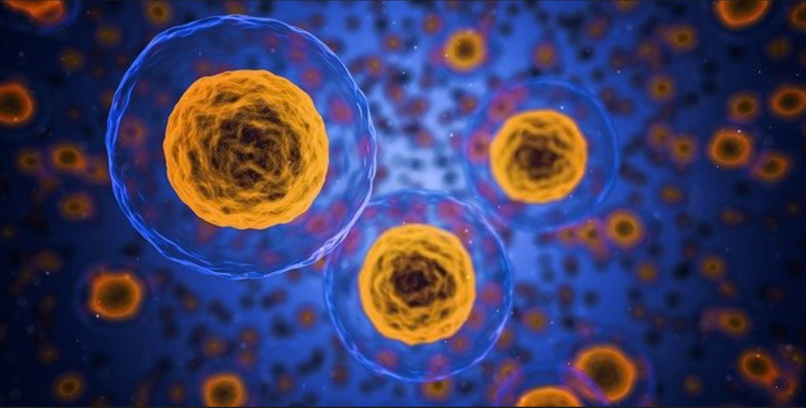
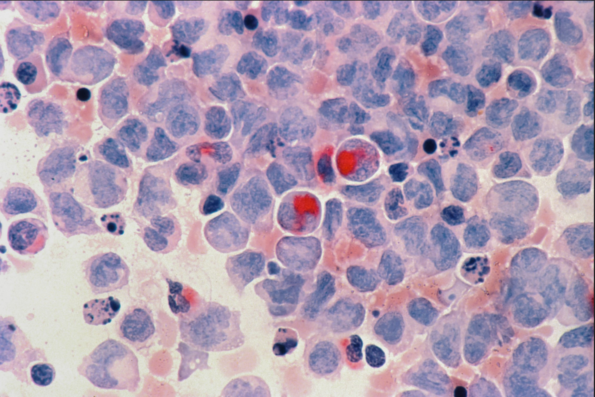
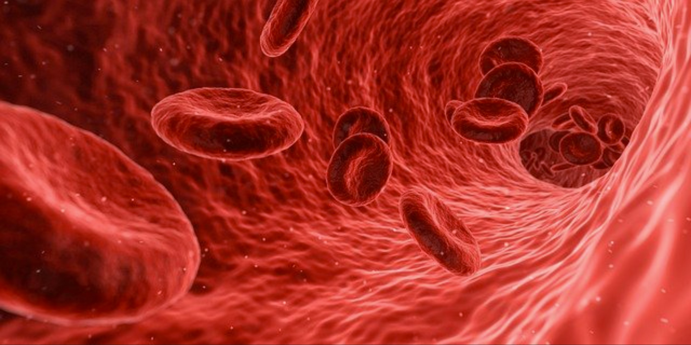

Interesting Cell Cycle Facts

Figure 1.1: An image of the human cells, the basic structure of the human body.
Human body reproduces about 330 billion cells every day.
The human body consists of more cells than you may have thought. Our body is made up of trillions of cells that intrinsically harmonize with each other. It is estimated that a 70 kilogram male has roughly 30 trillion human cells. Each day, our body replaces about 330 billion cells. This means that in about 100 days, our body would have reproduced about 30 trillion cells, the equivalent of a new human body!

Figure 1.2: An image of a leukemia, cancer of the body's blood-forming tissues.
Cancer is developed when cells start reproducing when they are not supposed to.
An error can occur as cells divide in the body. Cancer can form when genetic changes occur to the proto-oncogenes and tumor suppressor genes. Proto-oncogenes and tumor suppressor genes are involved in cell growth and division. When these genes are altered, they may allow cells to grow and survive when they should not, leading to uncontrolled cell growth. This abnormal growth of cancer cells can create a tumor in the body.

Figure 1.3: Red blood cells.
Some cells are incapable of regeneration
Not all of the cells in the human body can regenerate. Some cells, such as neurons, skeletal muscle cells, and red blood cells, do not have the function to undergo the cell cycle. These cells are called permanent cells as they neither reproduce nor transform. That is why brain and heart injuries are detrimental and can cause permanent damage to the organs. However, this does not mean that our body cannot create these types of cells. The neuron can form new connections to make up for the lost neurons. Skeletal muscle cells can be enlarged in the process called hypertrophy. While the red blood cells cannot reproduce, new red blood cells are created in the red bone marrow.
Reference
- Anderson, D. (2020, September 8). How much skin, blood, and saliva humans produce in a lifetime. Business Insider. Retrieved from https://www.businessinsider.com/how-much-skin-blood-saliva-does-body-make-lifetime-2019-10
- Fischetti, M. (2021, April 1). Our bodies replace billions of cells every day. Scientific American. Retrieved from https://www.scientificamerican.com/article/our-bodies-replace-billions-of-cells-every-day/
- What is cancer? National Cancer Institute. (n.d.). Retrieved from https://www.cancer.gov/about-cancer/understanding/what-is-cancer
 webmaster
webmaster